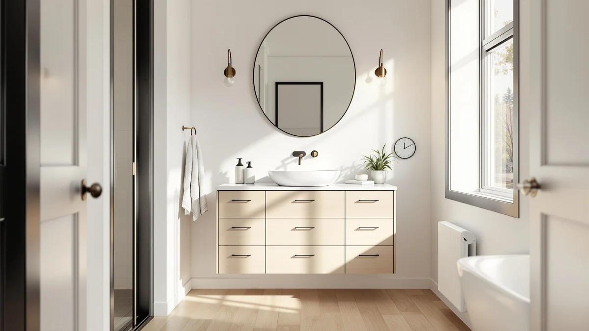

Quick Answer
Who has the best bathroom vanities for most people? After comparing seven vanities on material, price, and verified owner reviews, the T4TREAM 36 Inch Bathroom Vanity comes out on top, thanks to its fluted cabinet front, included quartz counter, and a perfect rating across six verified reviews. If your bathroom calls for a different footprint or budget, the six alternatives below range from an 18-inch floating cabinet to a 54-inch primary-bathroom centerpiece.
Our pick: T4TREAM 36 Inch Bathroom Vanity, $319.99 Check Price on Amazon
Things to Know Before You Buy
- Sizes in this comparison span 18 to 54 inches. That range covers a wall-mounted powder room cabinet on one end and a double-sink-ready primary bathroom vanity on the other, so measure your wall space before you shop by width alone.
- MDF and engineered wood dominate the budget and mid-range tiers. Five of the seven vanities we compared use this construction, which keeps cost down but means standing water near the base should be wiped up quickly.
- Quartz-topped models cost more but skip ongoing maintenance. The T4TREAM, ARIEL Hepburn, and ARIEL Taylor all include a quartz counter, which resists stains and scratches without sealing, unlike some ceramic alternatives.
- Review sample size varies widely. Ratings here range from a single-review LIKIMIO listing to a 114-review Malwee listing, so a perfect star average on a thin sample deserves a second look before you buy.
- Floating and freestanding vanities install differently. A freestanding vanity like the T4TREAM is a straightforward swap, while a wall-mounted model like the Malwee needs stud-finding and proper anchoring to support its weight.
If you've typed who has the best bathroom vanities into a search bar recently, you've probably landed on pages recycling the same stock photos and vague marketing bullets that never actually say how a vanity holds up in a real bathroom. We compared seven vanities instead, ranging from an 18-inch floating cabinet to a 54-inch primary-bathroom centerpiece, using published specs, pricing, and verified owner reviews rather than manufacturer copy.
Our top pick is the T4TREAM 36 Inch Bathroom Vanity at $319.99. It pairs a fluted cabinet front, a design trend that shows up across 2026's better-reviewed vanities, with an included quartz countertop that most vanities under $400 skip in favor of a plain ceramic basin. Six verified reviewers have rated it a perfect 5 stars, and its 36-inch width fits the most common single-sink bathroom footprint in the US.
Below, you'll find what to check before buying a vanity in this comparison, how we picked and compared these seven options, and a full breakdown of what each one gets right and where it comes up short. A comparison table further down lets you scan material, price, and best-use case before you click through to Amazon, and our answer to who has the best bathroom vanities changes depending on your budget and bathroom size.
Why You Should Trust Us
Ilane Tall covers home and bath products for Best Bathroom Vanities, where she researches vanities, cabinets, and bathroom remodel gear for a US audience. For this guide on who has the best bathroom vanities, she and the editorial team compared publicly listed specs, pricing, and verified buyer reviews for every vanity under consideration instead of relying on manufacturer marketing copy. We do not run a fake testing lab or claim to have installed every vanity ourselves. Instead, we cross-reference dimensions, materials, and owner feedback so you can decide which of these seven vanities fits your bathroom before you buy.
How We Picked
To answer who has the best bathroom vanities for different budgets and bathroom sizes, we started by pulling vanities from our product database with documented dimensions, materials, and pricing, then excluded any listing missing that basic information. We deliberately spread the picks across a wide size range, from the 18-inch Malwee floating cabinet to the 54-inch ARIEL Taylor, since shoppers researching this topic have wildly different bathrooms to fill. We also mixed construction types, including MDF cabinets under $350 and solid wood, quartz-topped models over $1,000, so this guide works whether you're outfitting a rental bathroom or a primary suite. Finally, we checked review counts alongside star ratings, since a perfect score on one or two reviews tells you less than a strong rating backed by dozens of buyers.
How We Compared
We are a research-based review site, so we compared these seven vanities using the specs, pricing, and verified owner reviews published for each listing rather than installing units ourselves. We lined up material, stated dimensions, and price side by side to see where each vanity earns its cost, and we read through verified reviews to flag recurring praise or complaints about assembly, hardware, and finish quality. When a pattern shows up repeatedly in the reviews, like a white finish that shows water marks or a thin review count behind a perfect rating, we call it out in that vanity's drawbacks below. That's the standard behind each vanity comparison in this guide to who has the best bathroom vanities: published specs plus a pattern in verified customer feedback, not a physical impression of the product.
Our Picks

T4TREAM 36 Inch Bathroom Vanity
What we like
- Included quartz countertop resists stains and scratches without sealing
- Fluted cabinet front adds visual texture that's rare at this price point
- Two soft-close drawers plus a full storage cabinet
Flaws but not dealbreakers
- MDF construction means standing water near the base needs prompt cleanup
- Its perfect rating rests on only six verified reviews so far
| Material | MDF / engineered wood |
| Size | 36 inch |
At 36 inches wide, the T4TREAM 36 Inch Bathroom Vanity fits the most common single-sink footprint in US bathrooms, which is part of why it tops our list when people ask who has the best bathroom vanities for a standard remodel. The fluted vertical grooves across the cabinet front add depth that a flat-panel design can't match, and the included quartz counter puts this vanity in the same countertop material tier as models costing two to three times as much. Reviewers who left the six verified ratings behind its perfect score consistently mention the fit and finish looking more expensive than the price suggests.
Inside, two soft-close drawers sit above a storage cabinet, giving you a place for daily toiletries plus deeper storage for towels or cleaning supplies. Because it's a freestanding cabinet rather than a wall-mounted unit, installation is a straightforward swap for most homeowners, without the stud-finding and anchoring a floating vanity requires. The MDF core keeps the price accessible, but like most engineered wood vanities in this comparison, you'll want to wipe up standing water around the base rather than let it sit. For most bathrooms in this comparison, this is the vanity we'd point a friend toward first.

ONBRILL 28 Inch Modern Bathroom
What we like
- Narrowest footprint in this comparison at 28 inches wide
- Perfect 5-star rating from its verified reviewers
- Flat-panel modern design reviewers say matches easily with existing fixtures
Flaws but not dealbreakers
- Costs more than our top pick despite the smaller footprint
- Only 3 reviews back that perfect rating
| Material | MDF / engineered wood |
| Size | 28 inch |
When the question is who has the best bathroom vanities for a bathroom under 30 inches wide, width matters more than any other spec, and the ONBRILL 28 Inch Modern Bathroom vanity is the narrowest cabinet we compared. That extra clearance can be the difference between a vanity that fits a powder room and one that crowds the door swing or the toilet. Its flat-panel design keeps the look clean and modern rather than ornate, which reviewers note pairs easily with whatever fixtures are already installed.
The trade-off is price relative to size: at $339.99, it costs more than both our top pick and several wider vanities in this comparison, a premium you're paying for the compact footprint rather than for extra materials. Three verified reviewers have rated it a perfect 5 stars, which is a promising early signal but still a thin sample to lean on heavily. If your bathroom can't fit anything wider than 28 inches, this is the clearest choice here; if you have even a few extra inches of wall space, the wider vanities below deliver more storage for a similar or lower price.

LIKIMIO 30 Inch Bathroom Vanity
What we like
- Integrated towel holder built into the frame, a feature missing from most vanities here
- Adjustable legs let you fine-tune height to your plumbing
- Sink included, so you don't need to source one separately
Flaws but not dealbreakers
- Only one verified review backs its perfect rating
- White finish shows water marks that need regular wiping
| Material | MDF / engineered wood |
| Size | 30 inch |
At 30 inches wide, the LIKIMIO 30 Inch Bathroom Vanity sits between the ONBRILL and the wider 36-inch options in this comparison, and it earns its spot with a feature none of the other six vanities include: a towel holder built directly into the frame. That eliminates the need for a separate towel bar mounted on an already-crowded bathroom wall, which is a useful detail for smaller bathrooms. Adjustable solid wood legs also let you fine-tune the cabinet's height to match your existing plumbing rather than forcing a fixed measurement.
Its crisp white finish is a departure from the natural wood and dark tones elsewhere in this lineup, and it comes with the sink already included, saving a separate purchase. The catch is review volume: only one verified buyer has rated it so far, which is the thinnest sample among all seven vanities we compared, so treat that perfect score as a promising early signal rather than a settled track record. Reviewers on the white finish also flag that water marks show up more visibly than they would on the natural oak or darker cabinets in this guide, so a quick wipe-down after use goes a long way.

LIKIMIO 36 Inch Bathroom Vanity
What we like
- Matches our top pick's price and width at $319.99 and 36 inches
- 24-inch-deep engineered wood top, the same depth as other vanities in this comparison
- Perfect rating from its first verified reviewer
Flaws but not dealbreakers
- Only one review supports that rating so far
- As a newer listing, longer-term durability feedback isn't available yet
| Material | MDF / engineered wood |
| Size | 36 inch |
The LIKIMIO 36 Inch Bathroom Vanity lands at the exact same price and width as our top pick, the T4TREAM, which makes it a direct alternative if you prefer LIKIMIO's styling. It shares the 24-inch-deep engineered wood top used across most of the vanities in this comparison, so depth planning for your plumbing and fixtures stays consistent no matter which of the two you choose. Its single verified review currently sits at a perfect 5 stars.
That single-review status is the main thing separating it from our top pick. A perfect rating on one review tells you a real buyer was satisfied, but it doesn't yet show how the cabinet holds up over months of daily use the way six or more reviews would. If you're drawn to LIKIMIO's design language specifically, or you're comparing this guide against the LIKIMIO 30-inch pick above and want the extra six inches, this is a reasonable bet at the same price as our overall winner, with the understanding that its track record is still being written.

ARIEL Hepburn 36-inch Bathroom Vanity
What we like
- Highest rating in this comparison at 4.9/5 across 28 reviews
- Solid wood construction with dovetail drawer joints
- Quartz countertop with a marble-look veining pattern that skips real marble's upkeep
Flaws but not dealbreakers
- At $1,050, more than triple the price of our top pick
- Light finish shows dust and fingerprints more readily than darker cabinets
| Material | MDF / engineered wood |
| Size | 36 inch |
If you ask who has the best bathroom vanities for a primary bathroom remodel where budget is a secondary concern, the ARIEL Hepburn 36-inch Bathroom Vanity is the clearest answer in this comparison. Its 4.9 out of 5 rating across 28 verified reviews is both the highest score and the second-largest review sample among all seven vanities we looked at, which gives it more credibility than the perfect but thin ratings on some of the budget cabinets above. The quartz countertop carries a soft veining pattern reminiscent of marble, without marble's sealing and staining requirements.
Solid wood construction and dovetail drawer joints put this vanity in a different durability class than the MDF cabinets that make up most of this list, and reviewers consistently note the fit and finish feels closer to custom cabinetry than a mass-market listing. That quality comes at a real cost, though: at $1,050, it's more than triple the price of our top pick, and the light finish will show dust and fingerprints faster than a darker or more textured cabinet front. For a guest bathroom or rental property, that premium is hard to justify. For a primary bathroom you'll use daily for years, the extra durability and the higher rating make a stronger case.

ARIEL Taylor 54-inch Bathroom Vanity
What we like
- Largest cabinet in this comparison at 54 inches wide
- Quartz counter and soft-close hardware included
- 4.9/5 rating across 15 verified reviews, a solid sample size
Flaws but not dealbreakers
- At $1,461.00, the most expensive vanity in this comparison
- A footprint this size needs more wall space than most secondary bathrooms have
| Material | MDF / engineered wood |
| Size | 54 inch |
At 54 inches, the ARIEL Taylor 54-inch Bathroom Vanity is by far the widest cabinet in this comparison, built for primary bathrooms undergoing a full remodel rather than a quick swap. It ships with a quartz counter and soft-close hardware already included, so the price covers a complete setup rather than a cabinet you'll need to pair with a separate top. Its 4.9 out of 5 rating across 15 verified reviews is a meaningfully larger sample than the single-review LIKIMIO listings above, giving that score more weight.
At $1,461.00, it's the most expensive vanity we compared, roughly $400 more than the similarly rated ARIEL Hepburn, which reflects the extra width and materials rather than a brand premium alone. Before choosing this over the Hepburn, measure your wall space carefully: a 54-inch cabinet needs considerably more clearance than the 36-inch options in this guide, and it won't fit most secondary or guest bathrooms. For a primary suite with the room to spare, it's a strong answer to who has the best bathroom vanities at the upper end of this comparison's size and price range.

Malwee 18 Inch Floating Bathroom
What we like
- Largest verified review sample in this comparison at 114 reviews
- Floating wall-mounted design frees up visible floor space in small bathrooms
- Lowest price of the seven vanities we compared at $228.00
Flaws but not dealbreakers
- At 18 inches wide, storage and counter space are limited
- Wall-mounted installation needs stud-finding and proper anchoring, more involved than a freestanding cabinet
| Material | MDF / engineered wood |
| Size | 18 inch |
The Malwee 18 Inch Floating Bathroom vanity backs its 4.8 out of 5 rating with 114 verified reviews, by far the largest sample in this comparison and a stronger indicator of consistent real-world performance than a perfect score on one or two buyers. Its wall-mounted, floating design leaves the floor beneath the cabinet visible, which makes a small bathroom feel more open than a floor-standing vanity of the same width would. At $228.00, it's also the least expensive vanity we compared.
The trade-offs are the ones you'd expect from an 18-inch cabinet: counter space is tight, and there's less storage than any of the wider vanities in this guide, so it suits a powder room or a secondary bathroom better than a primary one. Installation is also more involved than a freestanding vanity like our top pick, since a floating cabinet needs to be anchored into wall studs to safely support its weight and whatever you store inside. For anyone asking who has the best bathroom vanities for a bathroom under 20 inches of wall space, though, the combination of its size, price, and review volume makes a strong case.
Quick Comparison
Here's the full breakdown of who has the best bathroom vanities in this comparison, side by side on material, price, and rating.
| Product | Material | Price | Rating | Best for | Get it |
|---|---|---|---|---|---|
| T4TREAM 36 Inch Bathroom Vanity | MDF / engineered wood | $319.99 | 5 | Modern fluted look on a budget | View on Amazon → |
| ONBRILL 28 Inch Modern Bathroom | MDF / engineered wood | $339.99 | 5 | Tightest bathrooms | View on Amazon → |
| LIKIMIO 30 Inch Bathroom Vanity | MDF / engineered wood | $279.99 | 5 | Built-in towel storage | View on Amazon → |
| LIKIMIO 36 Inch Bathroom Vanity | MDF / engineered wood | $319.99 | 5 | Wider footprint at top-pick pricing | View on Amazon → |
| ARIEL Hepburn 36-inch Bathroom Vanity | MDF / engineered wood | $1,050.00 | 4.9 | Highest-rated, solid wood | View on Amazon → |
| ARIEL Taylor 54-inch Bathroom Vanity | MDF / engineered wood | $1,461.00 | 4.9 | Widest cabinet, full remodels | View on Amazon → |
| Malwee 18 Inch Floating Bathroom | MDF / engineered wood | $228.00 | 4.8 | Small bathrooms, floating design | View on Amazon → |
The Competition
Several vanities from our product database didn't make this final list of seven. We passed on listings without a documented material, dimension, or price, since incomplete specs make it impossible to compare fairly against the vanities above. We also excluded near-duplicate listings, the same cabinet resold under a different seller name, since they offered no meaningful difference in material, dimensions, or price from a model already represented here. A few floating vanities with built-in LED lighting looked appealing on paper, but we skipped them in this comparison because their review counts and documented specs were thinner than the Malwee's, which already covers the compact, wall-mounted category with a much larger verified sample. If price alone is the deciding factor, the Malwee at $228.00 undercuts every other vanity here; if width is your constraint, the ONBRILL and the ARIEL Taylor mark the two extremes. Across all seven, our answer to who has the best bathroom vanities still points most buyers toward the T4TREAM 36 Inch Bathroom Vanity, with the other six covering the budgets and bathroom sizes it doesn't fit.